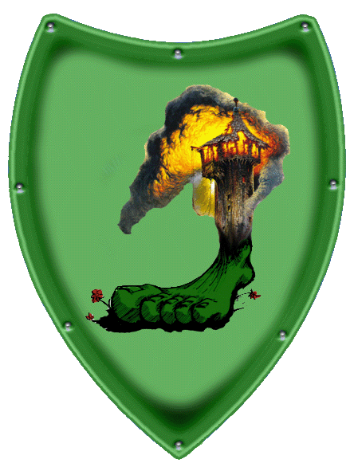

|

|
Das schwarze Brett
|
|
| Übersicht,
Geschichten (RPG) |
|
Es ist ruhig geworden... (11  ) )
|
Falaron Talgrund
  |
Oneiros am 14.Dunkelfrost im Jahre 457
Die Stille wurde unangenehm. „Ähäh ein Wohnhaus hier in Oneiros?“ ließ sich Ottor dann nach zweimaligen Räuspern vernehmen. „Ja ein Wohnhaus und ich dachte auch daran dann meine freie Zeit zu nutzen einen örtlichen Gesangsverein zu organisieren!“ Falaron wurde durch das entsetze Quieken des Wichtel das eine blasse grüne Farbe angenommen hatte und panisch am Hosenbein von Ottor zuppelte kurz abgelenkt. So entging ihm wie das gewohnte irre Flackern im Blick des Fürsten kurz etwas wich was nackte Angst sein könnte. „Denkt nur an all die Talente die sonst vielleicht unentdeckt und ungenutzt auf den Straßen von Oneiros herum laufen!“ Der Fürst trat zum Fenster und schaute besorgt die Straße hoch und runter. Doch dort war nichts Ungewöhnliches zu sehen nur die großen Brachlandflächen vor dem Rathaus. „Hm wir haben zurzeit ein großes Wohnungsnotproblem und kein Platz für neue Häuser aber wenn wir die Stadtmauern in ein paar Jahren erweitern… äh ich werde für Euch beim Herzog ein Wort einlegen in Soteria werdet Ihr sicherlich einen schönen Baum äh Bauplatz finden!“ ließ sich Ottor vernehmen „Und wegen Eurer Anfrage für das Amt des Bürgermeisters..“ „Oh Oneiros?“ unterbrach ihn Falaron. Ottor zuckte kurz zusammen. „Äh nein nicht direkt Oneiros wir haben da ein Hilfegesuch von alten Freunden erhalten denen wohl gerade ein Bürgermeister hm äh abhanden gekommen ist die äh Stadt liegt etwas weiter entfernt..“ und winkt dem Wichtel zu welches ungewohnt diensteifrig zu der großen Scherbenweltkarte an der Wand hechtete und nach einigem Suchen mit einem Zeigestab auf einen winzigen Fleck ganz im Nordosten der Scherbe und am Rand der Karte zeigte. „Die Mark el Ferror mit der Stadt Castello!“ referierte das Wichtel gewichtig und der Fürst fügte bestimmt und mit guten Ratschlägen dazu: „Nun das wird dann Eure neue Aufgabe werden! Äh die Leute dort oben mögen Ihre Ruhe also seid nett, singt nur leise und bringt möglichst niemanden um. Oder nur wenn es unbedingt sein muss!“ und mit wink auf seinen unordentlichen Schreibtisch „Ich habe jetzt noch zu tun. Wichtige Papiere oder so.“ Damit war die Audienz beendet. Das Wichtel zuppelte Falaron am Hosenbein zum Ausgang hin und übergab ihm noch eine Liste: „Dinge die Ihr mitbringen könnt wenn Ihr da ja schon in der Gegend seid. Reisekosten werden wie üblich nicht ersetzt.“
Als Falaron die Gassen Oneiros Richtung Meer hinab schritt überlegte er ob er vielleicht doch ein Wohnhaus in Soteria bauen sollte. Aber Soteria? Nein danke wer will denn schon Zwerge als Nachbarn.
Sir Falaron Talgrund,
Vorsteher von Castello el Ferror
Zur 2. Stunde am 80.Dunkelfrost im Jahre 457 |
12.01.14 16:40
|
|
Übersicht,
Geschichten (RPG)
|
|
|
|